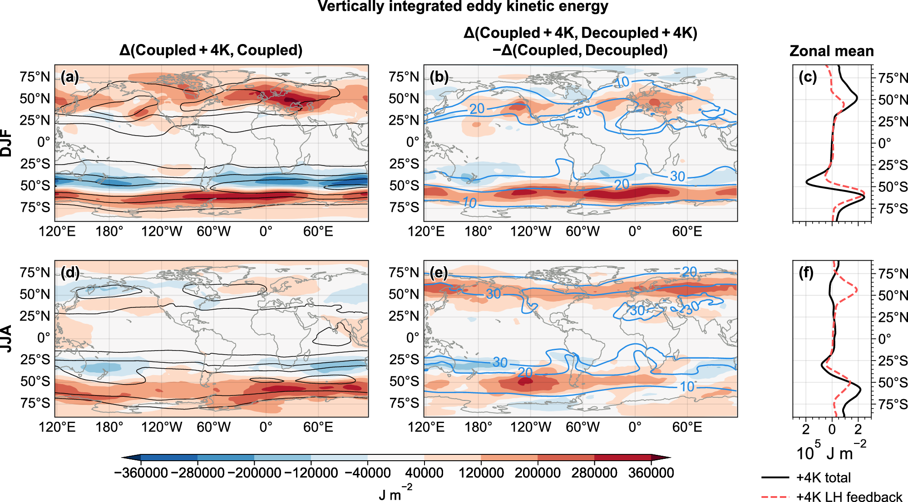
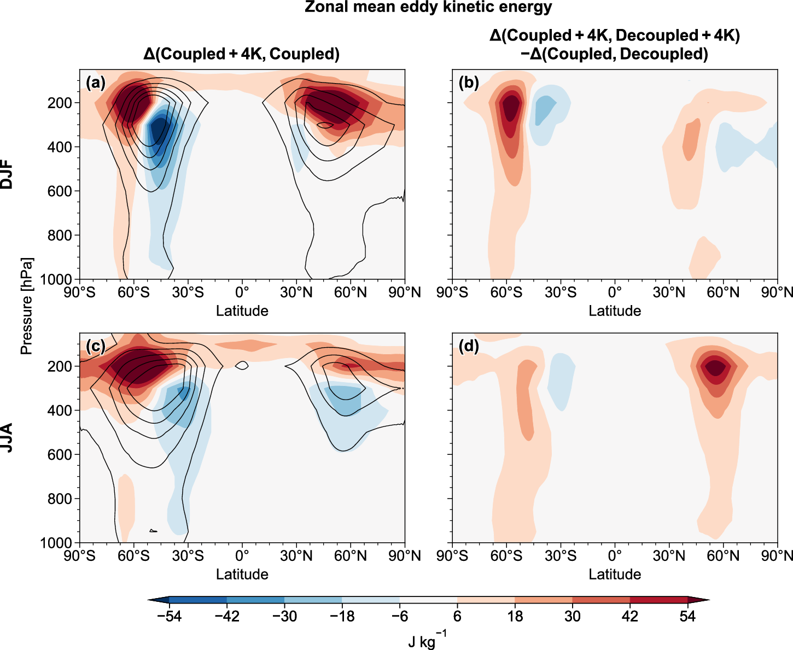
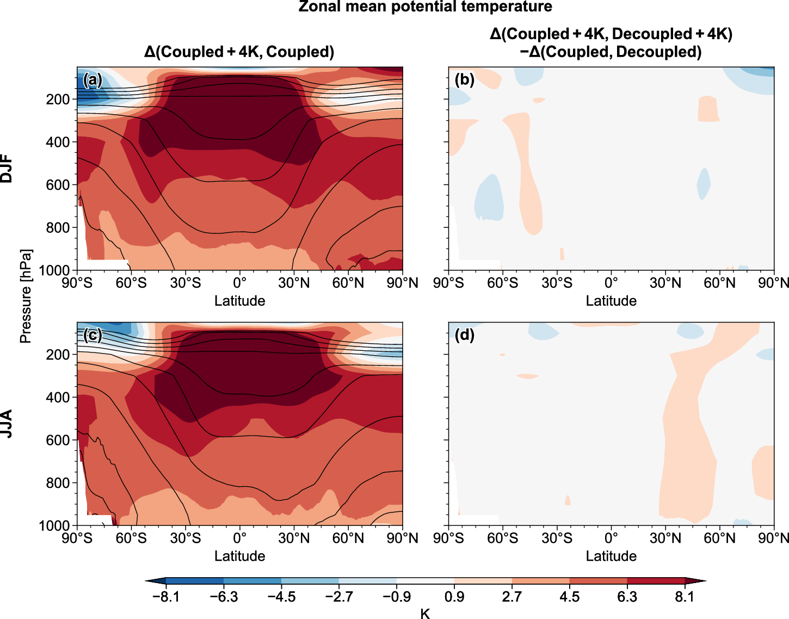
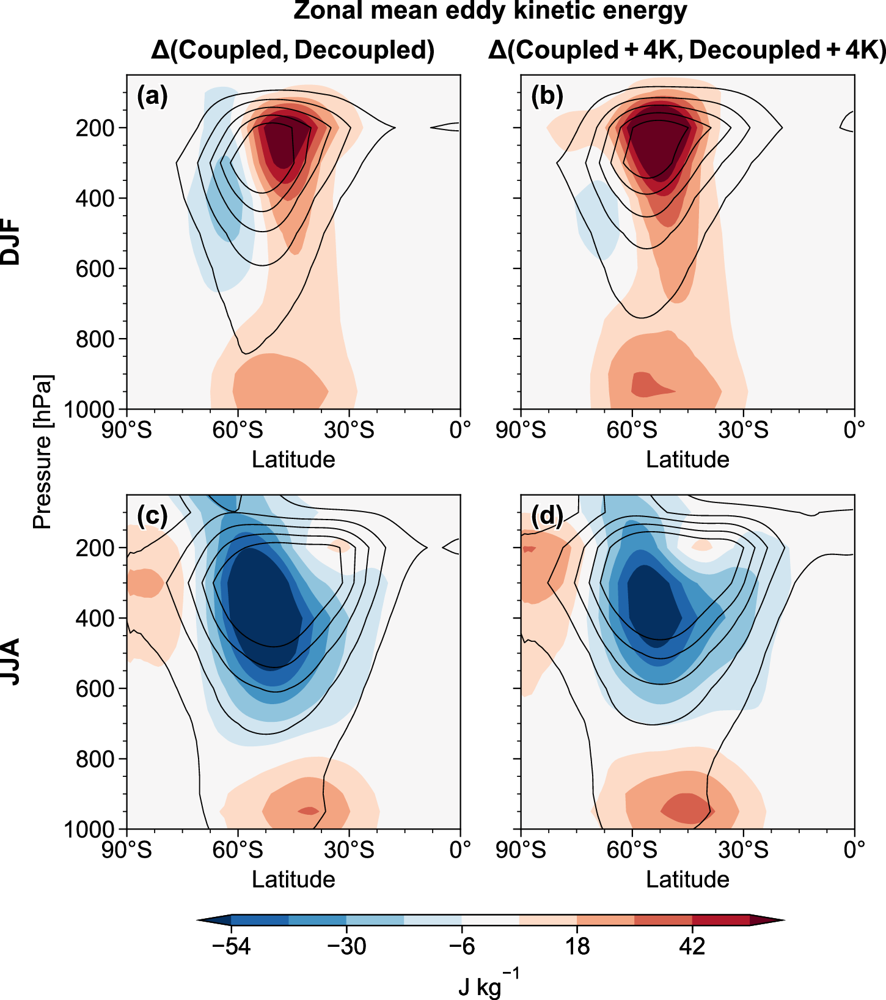
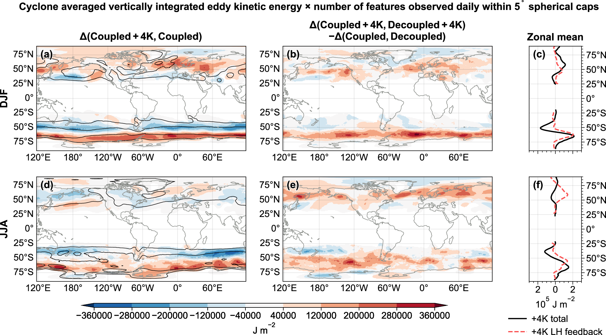
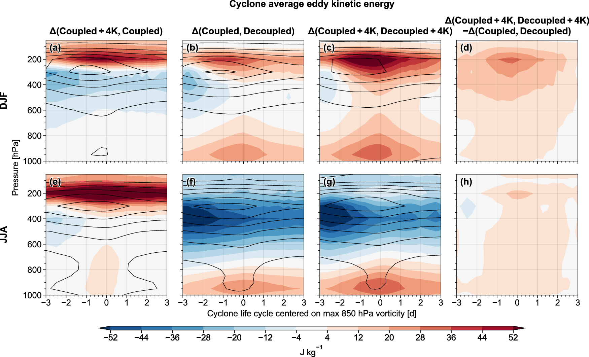
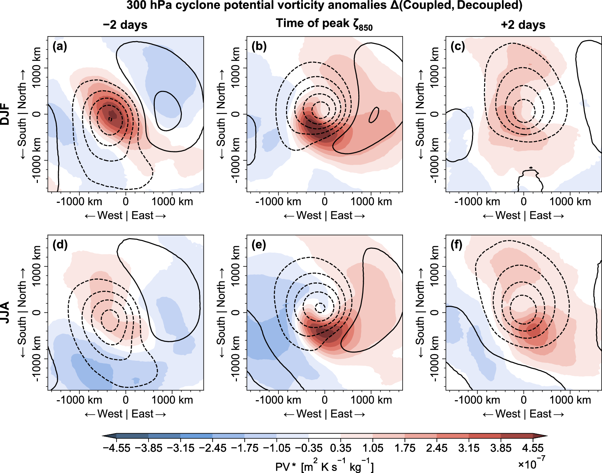
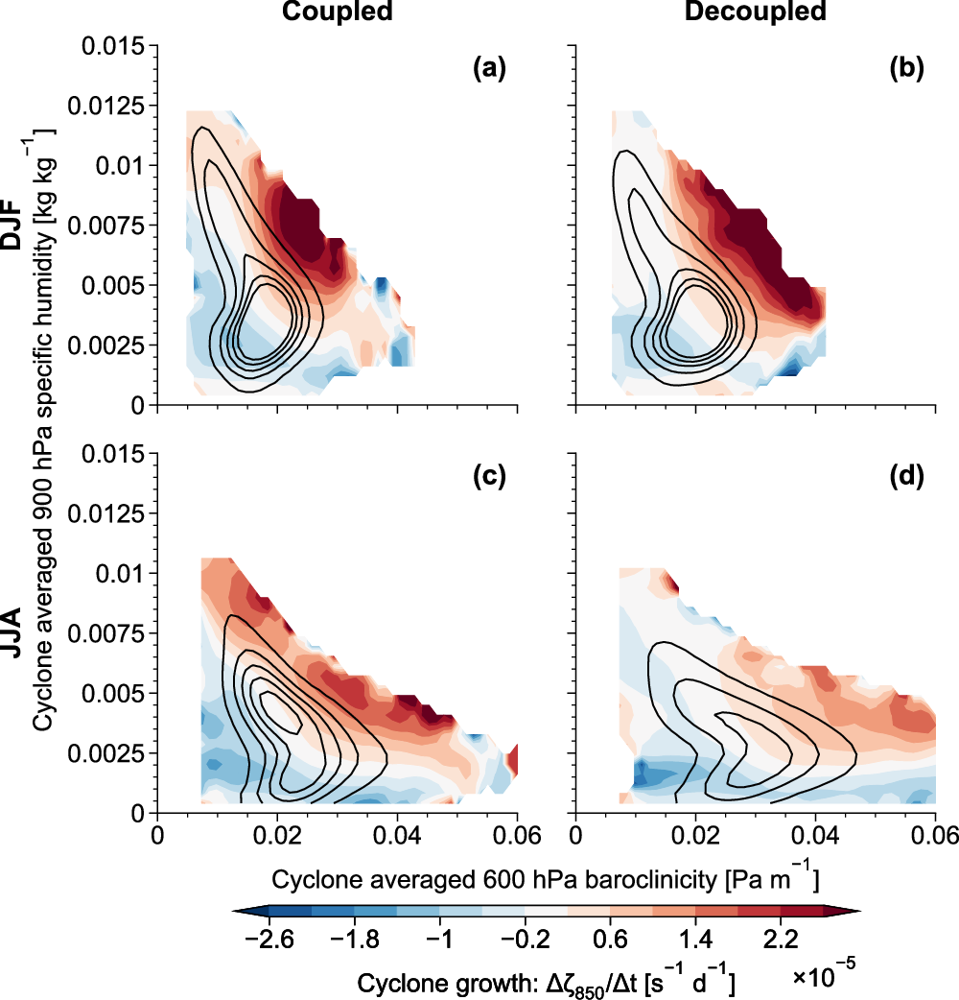
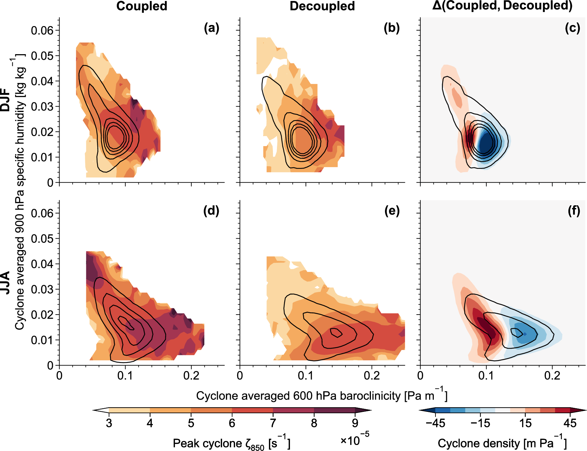
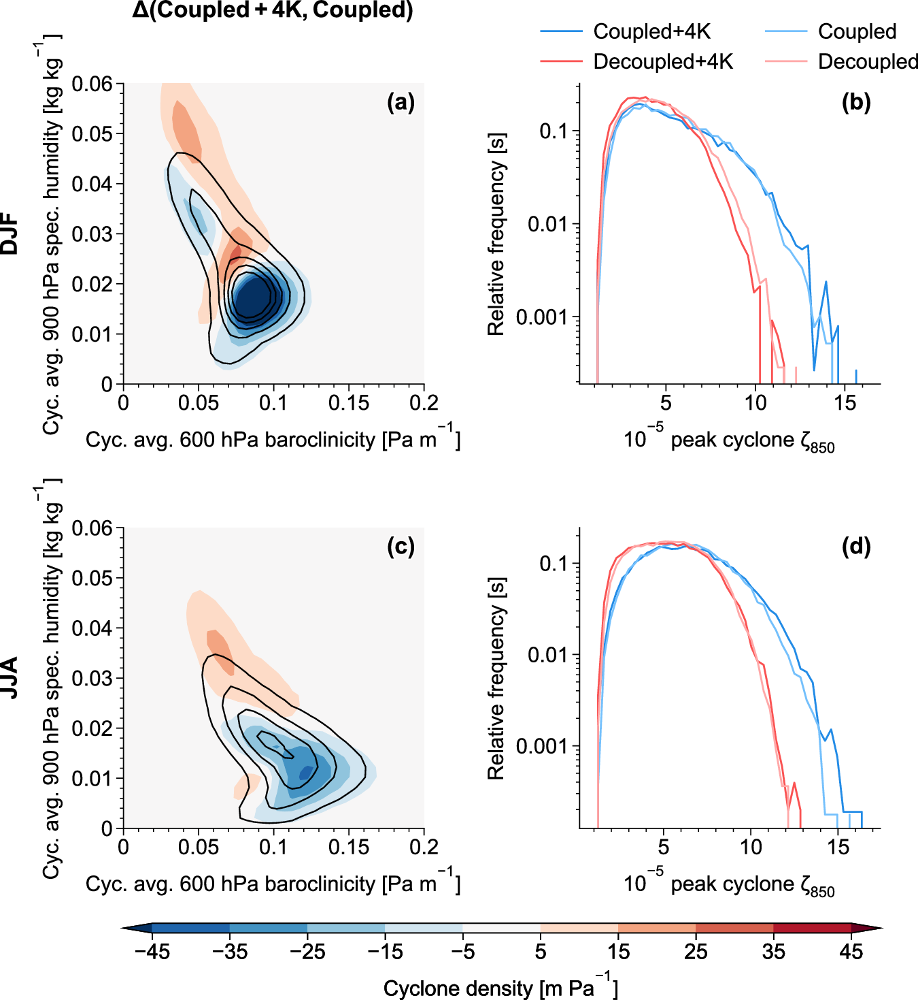

温带风暴在把暖湿空气向极、向上输送时释放潜热。该潜热加热通过加强单个气旋、并改变风暴增长的环境条件而反馈于风暴，构成潜热加热-动力反馈。气候变暖时风暴路径上的潜热加热增加，但这一反馈在未来气候中的作用仍不清楚。我们用大气环流模式试验，把耦合的加热-动力反馈与潜热加热的气候态变化分开，表明在海表均匀增暖 4 K 时，该反馈对风暴路径增强起主导量级作用。反馈提高低层风暴强度，补偿斜压性减弱；其对高层的作用则有季节差异：增强夏季涡旋，但抑制冬季涡旋。对于在潮湿环境中发展的风暴（夏季和更暖气候中的典型情形），这一反馈至关重要，因此气候模式需要准确刻画湿过程。
Extratropical storms release latent heat as they transport warm, moist air poleward and upward. That latent heating feeds back on storms by intensifying individual cyclones and by altering the environmental conditions for the growth of storms, constituting a latent heating-dynamics feedback. As the climate warms, storm-track latent heating increases, but the role of this feedback in a future climate remains unclear. Using atmospheric general-circulation model experiments that separate the coupled heating-dynamics feedback from climatological changes in latent heating, we show that this feedback plays a leading-order role in intensifying storm tracks under +4 K warming. The feedback increases lower-tropospheric storm intensity, compensating for reduced baroclinicity, while its upper-tropospheric effect is seasonal: amplifying summer eddies but damping winter ones. The feedback is critical for storms that grow in moist environments, typical for summer and warmer climates, underscoring the need for accurate representation of moist processes in climate models.
引言
Introduction
潜热加热是水汽凝结时释放的热量，相对于其干过程对应物，它倾向于加强温带风暴（Wernli and Gray, 2024）。大气增暖使环流中的水汽增加，预期会带来更强降水和潜热释放，从而可能使风暴更强（Booth et al., 2013）。然而，潜热加热导致的风暴加强在多大程度上随气温标度，并不是简单问题，因为潜热加热也会改变控制风暴增长的环境条件（Held, 1993; Papritz and Spengler, 2015; Catto et al., 2019）。本文给出新的模拟，用以检验更暖气候中风暴路径内部潜热加热的作用。
Latent heating, the heat released when water vapour condenses, tends to intensify extratropical storms relative to their dry counterparts (Wernli and Gray, 2024). Atmospheric warming increases the water vapour in the atmospheric circulation, which is expected to lead to more intense precipitation and latent heat release, and thus potentially to stronger storms (Booth et al., 2013). The extent to which the latent-heating-induced intensification of storms scales with atmospheric temperature is, however, non-trivial, because latent heating also modifies the environmental conditions that govern storm growth (Held, 1993; Papritz and Spengler, 2015; Catto et al., 2019). This paper presents novel simulations designed to test the role of latent heating within storm tracks in a warmer climate.
风暴路径的强度和位置常在欧拉框架中诊断：对水平风做空间或时间滤波，得到天气尺度涡动能（Hall et al., 1994; Chang et al., 2002）。暖湿轻空气上升、冷密空气下沉时，大气涡旋和平均有效位能转化为天气尺度涡动能（Lorenz, 1955）。凝结加热上升的暖湿空气，增加天气尺度有效位能（Danard, 1966; Auestad et al., 2024）并加强上升运动。尽管如此，平均有效位能以及随之而来的涡动能，被预估会随大气水汽含量增加而减小，因为潜热加热在气候态上减弱平均经向温度梯度并增加平均静力稳定度（Juckes, 2000; O'Gorman and Schneider, 2008; O'Gorman, 2010; Raible et al., 2010; Lutsko et al., 2024）。
The intensity and location of storm tracks are often diagnosed in an Eulerian framework by applying spatial or temporal filters to the horizontal winds to obtain the synoptic-scale eddy kinetic energy (Hall et al., 1994; Chang et al., 2002). Synoptic-scale eddy kinetic energy is converted from atmospheric eddy and mean available potential energy as warm, moist, and light air rises and cold, dense air sinks (Lorenz, 1955). Condensation heats the ascending warm and moist air, increasing synoptic available potential energy (Danard, 1966; Auestad et al., 2024) and enhancing ascent. Nevertheless, mean available potential energy, and consequently eddy kinetic energy, is projected to decrease with increasing atmospheric moisture content because latent heating climatologically weakens the mean meridional temperature gradients and increases the mean static stability (Juckes, 2000; O'Gorman and Schneider, 2008; O'Gorman, 2010; Raible et al., 2010; Lutsko et al., 2024).
作为欧拉统计的替代，把风暴作为个体做拉格朗日追踪表明：潜热加热不仅通过加强气旋内部低层位涡来增强气旋，还在气旋极侧施加正位涡倾向，从而加强深厚系统的向极传播（Tamarin and Kaspi, 2016; Yao et al., 2023）。潜热加热如何加强并引导气旋，关键在于其相对于气旋位涡结构的精确位置。因此，气候模式能否准确抓住风暴路径的强度和位置，很可能敏感地依赖于潜热加热的表征质量（Willison et al., 2013, 2015; Hawcroft et al., 2017; Schemm, 2023）。
As an alternative to Eulerian statistics, Lagrangian tracking of storms as individual features reveals that latent heating not only intensifies cyclones by strengthening lower-level potential vorticity within the cyclone, but also imposes a positive potential vorticity tendency poleward of the cyclone, thereby enhancing the poleward propagation of deep systems (Tamarin and Kaspi, 2016; Yao et al., 2023). A key factor in how latent heating intensifies and steers cyclones is its precise location relative to the cyclone's potential vorticity structure. Consequently, accurately capturing the intensity and position of storm tracks in climate models likely depends sensitively on how well latent heating is represented (Willison et al., 2013, 2015; Hawcroft et al., 2017; Schemm, 2023).
为检验模式中潜热加热结构表征好坏的潜在重要性，我们聚焦潜热加热与环流的耦合，而不是潜热加热的气候态变化。通过在大气环流模式中人为解耦潜热加热同时保留其气候态，我们专门量化动力过程与潜热加热之间的非线性耦合如何反馈于气流本身，并把这一效应称为潜热加热反馈（Auestad et al., 2025）。在当代气候中，该反馈加强对流层低层与气旋相伴的涡度，增强气旋向极传播，并放大定常波。
To test the potential importance of how well structures of latent heating are represented in models, we focus on the coupling between latent heating and the circulation, as opposed to the climatological changes in latent heating. By artificially decoupling the latent heating in an atmospheric general circulation model while preserving its climatology, we specifically quantify how the nonlinear coupling between dynamics and latent heating feeds back on the flow itself, an effect we refer to as the latent heating feedback (Auestad et al., 2025). In the present-day climate, this latent heating feedback strengthens cyclone-associated vorticity in the lower troposphere, enhances the poleward propagation of cyclones, and amplifies stationary waves.
这里我们同样把潜热加热与动力过程解耦，以量化当代气候和增暖 4 K 条件下，潜热加热反馈对涡动能和气旋强度的影响。由此可以看出，潜热加热与动力过程非线性关系的变化，在完全平衡的风暴路径响应中占多大份额。此外，事先并不能保证大范围聚合的涡动能主要反映与拉格朗日追踪气旋相同的动力学。为此，我们同时使用欧拉和拉格朗日度量，并把涡动能变化归因于被追踪温带气旋强度和位置的变化。
Here, we similarly decouple latent heating from the dynamics in order to quantify the latent heating feedback on eddy kinetic energy and cyclone intensity in both a present-day climate and under 4 K of warming. This reveals the relative contribution of the changes in the nonlinear relation between latent heating and dynamics to the full equilibrated storm track response. Furthermore, there is no a priori guarantee that eddy kinetic energy aggregated over large spatial domains primarily reflects the same dynamics as Lagrangian-tracked cyclones. To address this, we combine both Eulerian and Lagrangian metrics and attribute changes in eddy kinetic energy to changes in the intensity and location of tracked extratropical cyclones.
表 1 | 模拟与试验设计概览。(a) 试验：Coupled（正常潜热加热；海温为 1995-2005 气候态）；Decoupled（把 Coupled 的气候态潜热加热作为强迫；海温相同）；Coupled+4K（正常潜热加热；海温气候态均匀加 4 K）；Decoupled+4K（把 Coupled+4K 的气候态潜热加热作为强迫；海温气候态均匀加 4 K）。(b) 对比：Delta(Coupled+4K, Coupled) 量化 4 K 增暖效应；Delta(Coupled, Decoupled) 量化当代气候中的潜热加热反馈；Delta(Coupled+4K, Decoupled+4K) 量化增暖 4 K 气候中的反馈；两者之差量化 +4 K 下反馈的变化。Delta(x, y) = x - y。
Table 1 | Overview of simulations and experiment design. (a) Experiments: Coupled (normal latent heating; SST 1995-2005 climatology); Decoupled (prescribed climatological latent heating from Coupled; same SST); Coupled+4K (normal latent heating; SST climatology with 4 K added uniformly); Decoupled+4K (prescribed climatological latent heating from Coupled+4K; SST climatology with 4 K added uniformly). (b) Comparisons: Delta(Coupled+4K, Coupled) quantifies the effect of 4 K warming; Delta(Coupled, Decoupled) the latent heating feedback in present-day climate; Delta(Coupled+4K, Decoupled+4K) the feedback in a 4 K warmer climate; Delta(Coupled+4K, Decoupled+4K) minus Delta(Coupled, Decoupled) the change in the feedback under +4 K warming. Delta(x, y) = x - y.
结果
Results
涡动能对潜热加热反馈的响应
Eddy kinetic energy response to the latent heating feedback
试验设计包含四组大气环流模式模拟，模式为 CAM4（表 1）。每组积分 50 年，舍弃第一年作为起转。对每组模拟，用 10 天高通滤波水平风计算涡动能 (1/2)(u'^2 + v'^2)；10 天截止频率同时包含天气尺度风暴和天气波破碎（Riviere and Orlanski, 2007; Riviere et al., 2018）。
The experimental design constitutes four atmospheric general circulation model simulations, using CAM4 (Table 1). We run each simulation for 50 years, discarding the first year as spin-up. For each simulation, we calculate eddy kinetic energy as (1/2)(u'^2 + v'^2), using the 10-day high-pass filtered horizontal winds; the 10-day cut-off frequency includes both synoptic storms and the breaking of synoptic waves (Riviere and Orlanski, 2007; Riviere et al., 2018).
涡动能的全球变暖响应，取自把 1995-2005 气候态海温（Hurrell et al., 2008）作为下边界的模拟，与在该海温上均匀加 4 K 的相同模拟之差。我们把这一差值记为 Delta(Coupled+4K, Coupled)（表 1）。Coupled 表示潜热加热与动力过程耦合（即不改物理方案），以区别于后文的 Decoupled 试验。试验细节见方法部分和前一篇论文（Auestad et al., 2025）。
The global-warming response in eddy kinetic energy is computed by taking the difference between a simulation with prescribed climatological sea surface temperatures from 1995-2005 (Hurrell et al., 2008) and an identical simulation with 4 K uniformly added to the sea surface temperatures. We refer to this difference as Delta(Coupled+4K, Coupled) (Table 1). Coupled refers to the fact that latent heating is coupled to the dynamics (i.e. without modifications to the physics schemes), in contrast to the Decoupled runs discussed later. We refer to the Methods section and our previous paper for details on the experimental design (Auestad et al., 2025).
冬季涡动能对 +4 K 的响应大体与 CMIP6 趋势一致。在全球变暖试验 Delta(Coupled+4K, Coupled) 中，垂直积分涡动能在冬季半球总体增强（图 1a, d）。南半球和北太平洋冬季响应与 CMIP6 趋势一致，也可能与正在出现的再分析趋势一致；但北大西洋冬季涡动能增加在我们的试验中过于向极，相对于再分析和 CMIP6 偏极（Harvey et al., 2020; Chemke et al., 2022; Battalio and Lora, 2024）。
The wintertime eddy kinetic energy response to +4 K is largely consistent with the Coupled Model Intercomparison Project Phase 6 (CMIP6) trends. In the global-warming experiment, Delta(Coupled+4K, Coupled), vertically integrated eddy kinetic energy generally strengthens in the winter hemispheres (Fig. 1a, d). The Southern Hemisphere and North Pacific winter responses are consistent with the CMIP6 trends and potentially also emerging reanalysis trends, whereas the North Atlantic winter increase in eddy kinetic energy is shifted too far poleward in our experiments compared with reanalysis and the CMIP6 (Harvey et al., 2020; Chemke et al., 2022; Battalio and Lora, 2024).
夏季涡动能趋势同样与 CMIP6 预估大体一致。在各自夏季，全球变暖试验中涡动能在南半球向极移动、在北太平洋向赤道移动，并在北大西洋增强（图 1a, d）。南半球夏季涡动能变化再次与 CMIP6 趋势一致（Karbi and Chemke, 2025）。北半球夏季区域性、纬向不对称的涡动能增加在纬向平均中抵消。区域性北半球夏季响应与可能的再分析趋势并不一致（Battalio and Lora, 2024），但纬向平均净减弱看起来与 CMIP6 趋势一致（Chemke and Coumou, 2024）。
The summertime eddy kinetic energy trends are similarly consistent with the CMIP6 projections. In the respective summers, eddy kinetic energy shifts poleward in the Southern Hemisphere, equatorward in the North Pacific and strengthens in the North Atlantic in the global-warming experiment (Fig. 1a, d). The austral summer eddy kinetic energy changes are again consistent with trends in the CMIP6 (Karbi and Chemke, 2025). The regional and zonally asymmetric increase in eddy kinetic energy in boreal summer in the global-warming experiment cancels in the zonal mean. While the regional boreal summer responses are inconsistent with possible reanalysis trends (Battalio and Lora, 2024), the net zonal mean weakening appears consistent with the CMIP6 trends (Chemke and Coumou, 2024).
为量化全球变暖试验中潜热加热反馈对涡动能变化的贡献，我们把潜热加热与动力过程解耦。具体做法是重复 Coupled 和 Coupled+4K，但把温带自由对流层中的实时潜热加热替换为相应 Coupled 试验的气候态潜热加热（Auestad et al., 2025）。由此得到两组潜热加热与动力过程解耦的试验：当代气候的 Decoupled，以及增暖 4 K 的 Decoupled+4K。
To quantify the contribution from the latent heating feedback to the eddy kinetic energy changes in the global-warming experiment, we decouple latent heating from the dynamics. Specifically, we repeat both the Coupled and Coupled+4K simulations, except that we replace the real-time latent heating in the extratropical free troposphere with the climatological latent heating from the respective Coupled run (Auestad et al., 2025). This yields two runs with latent heating decoupled from the dynamics: one with a present-day climate, Decoupled, and one with a 4 K warmer climate, Decoupled+4K.
潜热加热反馈被量化为有别于气候态强迫的潜热加热效应。按构造，成对的耦合与解耦试验在温带自由对流层（解耦区域）具有相同的时间平均潜热加热。解耦试验中给定潜热加热，去掉了潜热加热的时间变率，从而消除动力过程与潜热加热的协方差（Auestad et al., 2025）。因此，只有耦合试验允许潜热加热与天气尺度动力过程之间的非线性相互作用，也就是反馈。
The latent heating feedback effect is quantified as the effect of latent heating distinct from the climatological forcing. By construction, the coupled and decoupled paired runs have identical time-mean latent heating in the extratropical free troposphere (the region of decoupling). Prescribing latent heating in the decoupled runs removes the temporal variance in latent heating and thus eliminates the covariance between the dynamics and latent heating (Auestad et al., 2025). Consequentially, only the coupled experiments allow for nonlinear interactions, or a feedback, between latent heating and the synoptic dynamics.
取 Coupled 与 Decoupled 之差，分别量化当代气候和增暖 4 K 气候中的潜热加热反馈，记为 Delta(Coupled, Decoupled) 和 Delta(Coupled+4K, Decoupled+4K)（表 1）。再取两者之差，就得到全球变暖试验中专门由潜热加热反馈变化所导致的气候变化。
Taking the difference between the Coupled and Decoupled experiments, we quantify the effect of the latent heating feedback in the present-day climate and in the 4 K warmer climate, which we denote by Delta(Coupled, Decoupled) and Delta(Coupled+4K, Decoupled+4K), respectively (Table 1). The difference Delta(Coupled+4K, Decoupled+4K) - Delta(Coupled, Decoupled) then gives the change in climate specifically due to the change in the latent heating feedback in the global-warming experiment.
结果表明，变化中的潜热加热反馈在全球风暴路径变化中起主导量级作用。南半球夏季，该反馈大约解释全球变暖试验中南半球涡动能增加的全部，但不解释副热带的减弱（图 1a-c）。两个半球的冬季，该反馈大约解释涡动能增加的一半（图 1a-f）。
The results show the changing latent heating feedback to play a leading order role in the global storm track changes. In austral summer, the latent heating feedback accounts for approximately all of the increase, but not the subtropical decrease in Southern Hemispheric eddy kinetic energy in the global-warming experiment (Fig. 1a-c). In winter in both hemispheres, the latent heating feedback explains roughly half of the increase in eddy kinetic energy (Fig. 1a-f).
北半球夏季较为特殊：潜热加热反馈使涡动能增加，但全球变暖的总涡动能响应在纬向平均上是净减弱（图 1d-f）。这意味着在解耦试验中，北半球夏季在 +4 K 强迫下存在补偿性的涡动能减少（Delta(Decoupled+4K, Decoupled)；未展示）。这可能与增暖时斜压性减弱有关，后文讨论。
The Northern Hemisphere during boreal summer stands out: there, the latent heating feedback increases eddy kinetic energy, yet the total eddy kinetic energy response to global warming is a net zonal-mean weakening (Fig. 1d-f). This implies that in the decoupled runs, there is a compensating decrease in eddy kinetic energy in the Northern Hemisphere in boreal summer under +4 K forcing (Delta(Decoupled+4K, Decoupled); not shown). This could be linked to baroclinicity reducing with warming, which is discussed later on.
潜热加热反馈在温带有水汽可用的地方最强。全球变暖下该反馈的涡动能响应，相对于总响应略向赤道偏移（图 1），冬季半球尤其如此。反馈响应一般在垂直积分比湿大于 10 kg m^{-2} 的区域最强（图 1b, e 蓝线）。反馈集中在水汽更多的区域，这在物理上是自洽的；这些区域夏季更偏极、也更接近纬向对称。水汽可用性很可能解释反馈响应位置的季节差异，而振幅差异来自对流层上层响应，见下节。
The latent heating feedback effect is strongest where moisture is available in the extratropics. The eddy kinetic energy response to the latent heating feedback under global warming is somewhat equatorward-shifted compared with the total response (Fig. 1), particularly in the winter hemispheres. The latent heating feedback response is generally strongest where vertically integrated specific humidity is larger than 10 kg m^{-2} (blue lines in Fig. 1b, e). It is physically consistent that the feedback effect is focused on regions where more moisture is available, which are located further poleward and are more zonally symmetric in summer than in winter. While moisture availability likely explains the seasonal differences in the location of the feedback response, the difference in amplitude arises from the upper-tropospheric response, which we show next.

图 1 | 涡动能对 4 K 增暖的响应：全响应以及归因于潜热加热反馈的部分。海温加 4 K 后垂直积分涡动能的响应（填色；a, d）以及潜热加热反馈的贡献（填色；b, e）。Coupled 的垂直积分涡动能以黑等值线画在 (a, d)，取 25, 75, 125, 175, 225, 275 x 10^5 J m^{-2}。Coupled+4K 的垂直积分比湿以蓝等值线画在 (b, d)，单位 kg m^{-2}。(c, f) 为纬向平均的垂直积分涡动能。
Fig. 1 | Eddy kinetic energy response to 4 K warming: full response and response attributed to the latent heating feedback effect. The response in vertically integrated eddy kinetic energy to adding 4 K to the sea surface temperatures (shading; a, d) and the contribution from the latent heating feedback (shading; b, e). Vertically integrated eddy kinetic energy in Coupled is shown by black contours in (a, d) for the levels: 25, 75, 125, 175, 225, 275 x 10^5 J m^{-2}. Vertically integrated specific humidity in Coupled+4K is shown in blue contours (b, d), with units of kg m^{-2}. Zonally averaged vertically integrated eddy kinetic energy is shown in (c, f).

图 2 | 纬向平均涡动能对增暖的响应：全响应以及归因于潜热加热反馈的部分。填色为纬向平均涡动能对海温加 4 K 的响应 (a, c)，以及对海温加 4 K 时潜热加热反馈的贡献 (b, d)。等值线为 Coupled 试验的纬向平均涡动能 (a, c)，取 50, 100, 150, 200, 250 J kg^{-1}。
Fig. 2 | Zonal mean eddy kinetic energy response to warming: full response and response attributed to the latent heating feedback effect. The shading shows the response in zonal mean eddy kinetic energy to adding 4 K to the sea surface temperatures (a, c) and to the latent heating feedback when adding 4 K to the sea surface temperatures (b, d). The contours show the zonal mean eddy kinetic energy in the Coupled run (a, c) for levels: 50, 100, 150, 200, 250 J kg^{-1}.
涡动能响应的垂直结构
The vertical structure of the eddy kinetic energy response
在全球变暖试验中，南半球纬向平均涡动能在夏、冬两季都向上并向极移动（图 2a, c）。北半球纬向平均涡动能在两季也向上移动，但只有北半球冬季才对 +4 K 强迫出现向极移动（图 2a, c）。
In the global-warming experiment, zonal mean eddy kinetic energy shifts upward and poleward in both summer and winter in the Southern Hemisphere (Fig. 2a, c). In the Northern Hemisphere, the zonal mean eddy kinetic energy also shifts upward in both seasons, yet eddy kinetic energy shifts poleward in response to +4 K forcing only in boreal winter (Fig. 2a, c).
+4 K 强迫下潜热加热反馈的变化，使夏季半球对流层上层涡动能增加大于冬季半球（图 2b, d）。因此，高层响应的季节差异可以解释：在 +4 K 强迫下，潜热加热反馈对垂直积分涡动能的贡献只约占冬季总增加的一半，却几乎占夏季总增加的全部（图 1c, f）。
The change in the latent heating feedback under +4 K forcing produces a larger increase in upper-tropospheric eddy kinetic energy in the summer hemispheres than in the winter hemispheres (Fig. 2b, d). Consequently, the differing upper-tropospheric response explains why the vertically integrated eddy kinetic energy response to the latent heating feedback under +4 K forcing accounts for only about half of the wintertime increase, but nearly all of the summertime increase, in the total eddy kinetic energy response to +4 K forcing (Fig. 1c, f).
为理解纬向平均涡动能变化，我们考察纬向平均位温变化，它在一阶上驱动大气密度变化（图 3）。斜压不稳定的经典涡旋-平均流理论，把涡动能的长期变化与垂直和经向密度梯度变化联系起来，尽管瞬变涡旋也会反馈平均态（Hall et al., 1994; Lorenz, 1967; Lindzen and Farrell, 1980）。气候变暖时，对流层上层热带空气和对流层下层极地空气增暖最强，因为热带水循环放大、极地反馈出现。这使对流层上层密度梯度加强、下层梯度减弱；前者加强涡动能并使其向极移动，后者则削弱涡动能（Shaw et al., 2016）。
To understand the changes in zonal mean eddy kinetic energy, we examine the changes in zonal mean potential temperature which to first order drive atmospheric density variations (Fig. 3). Classical eddy-mean-flow theory of baroclinic instability links long-term changes in eddy kinetic energy to changes in vertical and meridional density gradients, although transient eddies also feed back on the mean state (Hall et al., 1994; Lorenz, 1967; Lindzen and Farrell, 1980). As the climate warms, the upper-tropospheric tropical air and lower-tropospheric polar air warm most strongly, as the tropical water cycle amplifies and polar feedbacks emerge. This produces stronger density gradients in the upper troposphere and weaker gradients in the lower troposphere; the former strengthens and shifts eddy kinetic energy poleward, whereas the latter weakens it (Shaw et al., 2016).

图 3 | 纬向平均位温对增暖的响应：全响应以及归因于潜热加热反馈的部分。填色为纬向平均位温对海温加 4 K 的响应 (a, c)，以及对海温加 4 K 时潜热加热反馈的贡献 (b, d)。等值线为 Coupled 试验的纬向平均位温 (a, c)，取 230, 245, 260, 275, 290, 305, 320, 335, 350, 365, 380, 395 K。次表层格点已掩膜。
Fig. 3 | Zonal mean potential temperature response to warming: full response and response attributed to the latent heating feedback effect. The shading shows the response in zonal mean potential temperature to adding 4 K to the sea surface temperatures (a, c) and to the latent heating feedback when adding 4 K to the sea surface temperatures (b, d). The contours show the zonal mean potential temperature in the Coupled run (a, c) for the levels: 230, 245, 260, 275, 290, 305, 320, 335, 350, 365, 380, 395 K. Subsurface grid points are masked.
全球变暖试验中对流层上层位温梯度加强（图 3a, c），这与南半球纬向平均涡动能总体向上、向极移动一致（图 2a, c）。相反，北半球涡动能响应的巨大季节差异，很难用季节间变化很小的纬向平均位温响应来调和（图 3a, c）。
The upper-tropospheric potential temperature gradients strengthen in the global-warming experiment (Fig. 3a, c), which is consistent with the general upward and poleward shift in Southern Hemisphere zonal mean eddy kinetic energy (Fig. 2a, c). In contrast, the large seasonal difference in the Northern Hemisphere eddy kinetic energy response cannot be easily reconciled with the zonal mean potential temperature response, which vary little between the seasons (Fig. 3a, c).
这些试验中极地放大应较弱，因为全球变暖设置中海冰固定。极地上空位温确实增加，但不如热带强（图 3a, c）。此外，400 hPa 以下静力稳定度增加，应减弱涡动能，因为它减小有效位能库。
Polar amplification should be weak in these experiments because we hold sea ice fixed in the global-warming set-up. Potential temperatures do increase over the poles, although not as strongly as in the tropics (Fig. 3a, c). Additionally, static stability increases below 400 hPa, which should mitigate eddy kinetic energy as it reduces the reservoir of available potential energy.
Delta(Coupled+4K, Decoupled+4K) - Delta(Coupled, Decoupled) 中的涡动能响应，不太可能由平均态温度梯度变化驱动，因为涡动能与温度梯度响应的振幅不匹配。尽管潜热加热反馈在 4 K 增暖下的涡动能变化中起主导量级作用（图 2），该差分中的纬向平均位温响应远小于 Delta(Coupled+4K, Coupled)（图 3）。这确认试验设计把潜热加热对涡旋的直接效应变化，与潜热加热对平均态的效应变化分开了。
The eddy kinetic energy response in Delta(Coupled+4K, Decoupled+4K) - Delta(Coupled, Decoupled) is unlikely to be driven by changes in mean-state temperature gradients, given the mismatch in amplitude between the eddy kinetic energy and temperature-gradient responses. While the latent heating feedback plays a leading order role for the eddy kinetic energy changes under 4 K warming (Fig. 2), the zonal mean potential temperature response in Delta(Coupled+4K, Decoupled+4K) - Delta(Coupled, Decoupled) is much smaller than in Delta(Coupled+4K, Coupled) (Fig. 3). This confirms that the experimental design isolates changes in the direct effect of latent heating on the eddies from changes in the effect of latent heating on the mean state.
考察固定气候下对潜热加热反馈的响应可见：该反馈在冬季减弱对流层上层涡动能，在夏季则使其增加。图 4 分别给出当代和 +4 K 气候中耦合对垂直纬向平均涡动能的响应。Auestad 等给出的潜热加热反馈导致风暴路径向赤道移动，在两种气候中都可见（Auestad et al., 2025）。对流层低层，潜热加热反馈不论季节和半球都加强涡动能（图 4），且这一效应随增暖继续增强（图 2）。对流层上层则相反：反馈只在夏季加强涡动能，冬季则减弱。图 4 为南半球响应，北半球结果类似（未展示）。
Examining the response to the latent heating feedback for fixed climates reveals that the feedback weakens upper-tropospheric eddy kinetic energy in winter while it increases it in summer. Figure 4 shows the vertical zonal mean eddy kinetic energy response to coupling in present-day and +4 K climates, individually. The equatorward storm track shift due to the latent heating feedback shown in Auestad et al. is visible in both climates (Auestad et al., 2025). In the lower troposphere, the latent heating feedback strengthens eddy kinetic energy irrespective of season and hemisphere (Fig. 4), and this effect continues to increase with warming (Fig. 2). In the upper troposphere, in contrast, the latent heating feedback strengthens eddy kinetic energy only in summer, while it weakens eddy kinetic energy in winter. Figure 4 shows the Southern Hemispheric response, but the results are similar in the Northern Hemisphere (not shown).

图 4 | 当代与增暖 4 K 气候中，纬向平均涡动能对耦合的响应。填色为南半球纬向平均涡动能对潜热加热反馈的响应：当代气候 (a, c) 与 +4 K 气候 (b, d)。等值线为 Decoupled (a, c) 和 Decoupled+4K (b, d) 的纬向平均涡动能，取 50, 100, 150, 200, 250 J kg^{-1}。
Fig. 4 | Zonal mean eddy kinetic energy response to coupling in present-day and the 4 K warmer climate. The shading shows the response in Southern Hemisphere zonal mean eddy kinetic energy to the latent heating feedback in the present-day climate (a, c) and the +4 K climate (b, d). The contours show the zonal mean eddy kinetic energy in the Decoupled (a, c) and Decoupled+4K runs (b, d) for levels: 50, 100, 150, 200, 250 J kg^{-1}.
尽管潜热加热反馈在所有季节都明确加强对流层低层涡动能，它对对流层上层、从而对垂直积分涡动能的影响有很强季节依赖。南半球冬季，该反馈在增暖 4 K 气候中对上层涡动能的减弱小于当代气候（图 4c, d），因而上层涡动能有中等净增加（图 2d）。南半球夏季，该反馈在当代气候中就加强对流层上层涡动能，+4 K 强迫下更强（图 4a, b），从而出现净增加（图 2b）。
Although the latent heating feedback unambiguously strengthens lower-tropospheric eddy kinetic energy in all seasons, its effect on the upper troposphere, and therefore on vertically integrated eddy kinetic energy, is strongly seasonally dependent. In austral winter, the latent heating feedback weakens upper-tropospheric eddy kinetic energy less in the 4 K warmer climate than in the present-day climate (Fig. 4c, d), which results in a moderate net increase in upper-tropospheric eddy kinetic energy (Fig. 2d). In austral summer, the latent heating feedback strengthens upper-tropospheric eddy kinetic energy in present-day climate and even more with +4 K forcing (Fig. 4a, b), leading to a net increase (Fig. 2b).
本分析及后文主要聚焦南半球，因为两个半球对潜热加热反馈的纬向平均涡动能和被追踪风暴响应非常相似（未展示）。南半球结果因此可迁移到北半球。接下来把涡动能响应与被追踪风暴的变化联系起来，并更仔细考察该反馈对风暴结构和增长机制的影响。
For this analysis and for the rest of the paper, we mainly focus on the Southern Hemisphere as the zonal mean eddy kinetic energy and tracked storm responses to the latent heating feedback are very similar in both hemispheres (not shown). The Southern Hemisphere results can therefore be transferred to the Northern Hemisphere. In the next sections, we relate the eddy kinetic energy response to changes in tracked storms and more closely examine the effect of the latent heating feedback on storm structure and growth mechanisms.
潜热加热反馈对气旋的影响
The latent heating feedback effect on cyclones
涡动能响应反映气旋频率和强度的变化（图 5）。为说明这一点，我们在每个被追踪气旋的 1.5 倍罗斯贝半径内平均垂直积分涡动能，再乘以同一经纬度上每日观测到的气旋数（见方法）。由此得到的气旋条件涡动能响应，与全部涡动能响应定性相似（比较图 1 与图 5）。单独的空间气旋分布或平均气旋涡动能都不能解释总涡动能变化（未展示）；因此我们推断总涡动能响应同时来自风暴路径的空间移动和气旋强度变化。
The eddy kinetic energy response reflects changes in cyclone frequency and intensity (Fig. 5). To demonstrate this, we average the vertically integrated eddy kinetic energy within 1.5 times the Rossby radius of each tracked cyclone, and multiply the resulting cyclone-averaged eddy kinetic energy by the daily number of observed cyclones at the same longitude and latitude (see Methods). The resulting cyclone-conditional eddy kinetic energy response is qualitatively similar to the full eddy kinetic energy response (compare Figs. 1 and 5). Neither the spatial cyclone distribution nor the mean cyclone eddy kinetic energy alone explains the changes in total eddy kinetic energy (not shown); we therefore infer that the total eddy kinetic energy response arises from both spatial storm track shifts and changes in cyclone intensities.

图 5 | 归因于气旋的涡动能对增暖的响应：全响应以及归因于潜热加热反馈的部分。气旋平均垂直积分涡动能对海温加 4 K 的响应（填色；a, d）以及潜热加热反馈的贡献（填色；b, e）。各面板均为在 5 度球面帽上平均、再乘以同一 5 度球面帽内每日平均特征数后的气旋平均垂直积分涡动能。黑等值线 (a, c) 为 Decoupled 气候态，等值线层次与图 1 相同。(c, f) 为相应的纬向平均（气旋平均垂直积分）涡动能。
Fig. 5 | Cyclone attributed eddy kinetic energy response to warming: full response and response attributed to the latent heating feedback effect. The response in cyclone-averaged vertically integrated eddy kinetic energy to adding 4 K to the sea surface temperatures (shading; a, d) and the contribution from the latent heating feedback (shading; b, e). All panels show cyclone-averaged vertically integrated eddy kinetic energy averaged over 5 degree spherical caps and multiplied by the average number of features observed daily within the same 5 degree spherical caps. Black contours (a, c) show the Decoupled climatology for the same levels as in Fig. 1. The corresponding zonally averaged (cyclone-averaged vertically integrated) eddy kinetic energy is shown in (c, f).
图 6 给出南半球气旋合成的气旋平均涡动能垂直结构。合成覆盖 850 hPa 涡度峰值前后各三天。对流层低层，Coupled (a, e)、Decoupled (b, f) 和 Decoupled+4K (c, g) 的涡动能与 850 hPa 涡度同时达峰；对流层上层涡动能略早达峰（图 6 黑等值线）。
Figure 6 shows the vertical structure of cyclone-averaged eddy kinetic energy composited over cyclones in the Southern Hemisphere. The composites span the three days before and after the time of peak cyclone vorticity at 850 hPa. In the lower troposphere, eddy kinetic energy in the Coupled (a, e), Decoupled (b, f) and Decoupled+4K (c, g) runs peaks together with the 850 hPa vorticity, whereas in the upper troposphere eddy kinetic energy peaks slightly earlier (black contours in Fig. 6).

图 6 | 南半球气旋合成的气旋平均涡动能对耦合和 +4 K 强迫的响应。横轴为气旋生命期，以被追踪气旋 850 hPa 涡度峰值时刻为中心。给出对 4 K 增暖 (a, e)、当代气候中耦合潜热加热 (b, f)、增暖 4 K 气候中耦合潜热加热 (c, g)、以及 4 K 增暖下潜热加热反馈变化 (d, h) 的响应。黑等值线为 Coupled (a, e)、Decoupled (b, f) 和 Decoupled+4K (c, g) 的气旋平均涡动能，取 50 至 500 J kg^{-1}。
Fig. 6 | Response to coupling and +4 K forcing in cyclone-averaged eddy kinetic energy composited over cyclones in the Southern Hemisphere. The horizontal axes show cyclone lifetime, centred at the time of peak 850 hPa vorticity of the tracked cyclones. Shown are the responses to 4 K warming (a, e), to coupling latent heating in present-day climate (b, f), to coupling latent heating in the 4 K warmer climate (c, g), and to the change in the latent heating feedback effect under 4 K warming (d, h). The black contours show the cyclone averaged eddy kinetic energy in the Coupled (a, e), Decoupled (b, f), and Decoupled+4K (c, g) runs for levels: 50, 100, 150, 200, 250, 300, 350, 400, 450, 500 J kg^{-1}.
气旋平均涡动能对 +4 K 强迫和耦合的垂直结构，与欧拉涡动能相似（图 2）。耦合试验中 +4 K 强迫使气旋平均涡动能在两季都向上移动，并在南半球冬季对流层低层弱增加（图 6a, e）。+4 K 下潜热加热反馈的变化在两季都使整层对流层涡动能弱增加，但对对流层上层的加强在南半球夏季强于冬季（图 6d, h）。
The cyclone-averaged eddy kinetic energy reveals a vertical structure similar to the Eulerian eddy kinetic energy in response to +4 K forcing and coupling (Fig. 2). Due to +4 K forcing in the coupled runs, the cyclone-averaged eddy kinetic energy shifts upwards in both seasons and increases weakly in the lower troposphere in austral winter (Fig. 6a, e). The change in the latent heating feedback under +4 K forcing weakly increases eddy kinetic energy throughout the depth of the troposphere in both seasons, but enhances upper-tropospheric eddy kinetic energy more strongly in austral summer than in austral winter (Fig. 6d, h).
与欧拉响应一样，潜热加热反馈在当代气候两季都增加对流层低层气旋平均涡动能（图 6b, f），在 +4 K 气候中更甚（图 6c, g），从而使低层涡动能因反馈变化而净增加（图 6d, h）。对流层上层气旋平均涡动能因反馈变化而增加，来自南半球夏季的加强（图 6b, c）和南半球冬季减弱幅度变小（图 6f, g），再次与欧拉响应相似（图 4）。
As in the Eulerian response, the latent heating feedback increases lower-tropospheric cyclone-averaged eddy kinetic energy in both seasons in the present-day climate (Fig. 6b, f), and even more so in the +4 K climate (Fig. 6c, g), leading to a net increase in lower-tropospheric eddy kinetic energy due to the change in the latent heating feedback (Fig. 6d, h). The increase in upper-tropospheric cyclone-averaged eddy kinetic energy due to changes in the latent heating feedback arises from a strengthening of eddy kinetic energy in austral summer (Fig. 6b, c) and a reduced weakening in austral winter (Fig. 6f, g), again similar to the Eulerian response (Fig. 4).
潜热加热反馈导致的对流层低层涡动能增加，很可能来自潜热加热加强气旋内上升运动，从而拉伸并加速气旋性涡旋（Wernli and Gray, 2024）。风暴内潜热加热随气温增加，因此该效应随增暖加强是合理的，我们在两季试验中都看到这一点。
The increase in lower-tropospheric eddy kinetic energy due to the latent heating feedback likely results from latent heating enhancing ascent within cyclones, thereby stretching and spinning up the cyclonic vortex (Wernli and Gray, 2024). As latent heating within storms increases with atmospheric temperature, it is reasonable that this effect strengthens with warming, as seen in our experiments in both seasons.
潜热加热反馈对对流层上层涡动能的季节依赖效应不那么直观。季节差异可能来自：该反馈在夏季比冬季在更高高度上产生涡动能，因为暖大气中气旋内对流比冷大气穿透到更高层次（Tierney et al., 2018）。
The seasonally dependent effect of the latent heating feedback on upper-tropospheric eddy kinetic energy is less intuitive. The seasonal difference may stem from the latent heating feedback generating eddy kinetic energy at higher altitudes in summer than in winter, because convection within cyclones penetrates to higher levels in a warm atmosphere than in a cold atmosphere (Tierney et al., 2018).
夏季对流增强可能抵消潜热加热反馈对对流层上层涡动能的一般性减弱。该反馈导致的上层涡动能减弱在气旋强度峰值之前最强；这一效应在南半球冬季最强，南半球夏季在 400 hPa 附近也能看到（图 6b, c, f, g）。因此该效应似乎与典型气旋生命史变化有关，见下节。
Enhanced summertime convection may offset a general weakening of upper-tropospheric eddy kinetic energy by the latent heating feedback. The weakening of upper-tropospheric eddy kinetic energy due to the latent heating feedback is strongest before peak cyclone intensity, an effect which is strongest in austral winter, but can also be seen near 400 hPa in austral summer (Fig. 6b, c, f, g). Thus, the effect seems linked to changes in the typical cyclone life cycle, which we examine next.
最后指出，图 6h 的结果对被选气旋子集敏感。图 6 合成了生命期至少一半位于 30 度以极的全部气旋。若改为每个冬季合成最强的 10 个气旋，则减弱加强，从而使 +4 K 强迫下潜热加热反馈导致对流层上层气旋平均涡动能净减少（未展示）。这一敏感性进一步促使我们识别造成减弱的物理机制。
As a final remark, the results in panel h of Fig. 6 are sensitive to the subset of cyclones considered. In Fig. 6, we composite over all cyclones that spend at least half their lifetime poleward of 30 degrees. Instead, compositing the 10 strongest cyclones each winter shows that the weakening intensifies, leading to a net decrease in upper-tropospheric cyclone-averaged eddy kinetic energy due to the latent heating feedback under +4 K forcing (not shown). This sensitivity further motivates identifying the physical mechanism responsible for the weakening.
潜热加热反馈对气旋附近槽脊的影响
The latent heating feedback effect on troughs and ridges around cyclones
为更好理解潜热加热反馈对气旋附近对流层上层涡动能的影响，我们聚焦当代模拟，考察相对纬向平均的 300 hPa 位涡异常气旋中心合成（图 7）。为避免与冰盖相互作用，排除 70°S 以极的气旋；其余与前面分析的气旋相同（见方法）。黑等值线为 Decoupled 试验中各季节南半球气旋相关的位涡异常。峰值强度前两天，合成表现为相对低层气旋随高度向西倾斜的罗斯贝波（图 7a, d）。峰值时刻，位涡异常中心绕彼此气旋性旋转（图 7b, e），暗示与高影响切断低压相伴的气旋性罗斯贝波破碎（Barnes et al., 2025）。峰值后两天，单一槽仍大致与低层气旋垂直对齐（图 7c, f）。
To better understand the effect of the latent heating feedback on upper-tropospheric eddy kinetic energy in the vicinity of cyclones, we focus on the present-day simulations and examine cyclone-centred composites of 300 hPa potential vorticity anomalies relative to the zonal mean (Fig. 7). We exclude cyclones poleward of 70 degrees S to avoid interactions with the ice cap; otherwise, the cyclone composite includes the same cyclones as analysed previously (see Methods). The black contours show the potential vorticity anomalies associated with Southern Hemisphere cyclones in each season in the Decoupled run. Two days before peak intensity, the composites exhibit a Rossby wave that tilts westward with height relative to the lower-level cyclone (Fig. 7a, d). At peak intensity, the potential vorticity anomaly centres rotate cyclonically around each other (Fig. 7b, e), suggesting cyclonic Rossby wave breaking associated with high-impact cut-off low systems (Barnes et al., 2025). Two days after peak intensity, a single trough remains approximately vertically aligned with the lower-level cyclone (Fig. 7c, f).

图 7 | 南半球气旋在 300 hPa 相对纬向平均的位涡异常气旋中心合成。填色为 Coupled 与 Decoupled 位涡异常之差：峰值前 2 天 (a, d)、峰值时刻 (b, e)、峰值后 2 天 (c, f)。黑等值线为 Decoupled 气旋平均位涡异常，取 ±0.2 至 ±1.8 x 10^{-6} m^2 K s^{-1} kg^{-1}。与图 6 所用气旋集不同，这里去掉 70°S 以极的气旋，因其冰盖会造成虚假位涡。
Fig. 7 | Cyclone centred composites of potential vorticity anomalies from the zonal mean at 300 hPa for cyclones in the Southern Hemisphere. The shading shows the difference in anomalous potential vorticity between the Coupled and Decoupled runs 2 days before peak cyclone vorticity (a, d), at the time of peak cyclone vorticity (b, e), and 2 days after peak cyclone vorticity (c, f). The black contours show the mean potential vorticity anomalies on cyclones in the Decoupled run at levels: -1.8, -1.4, -1.0, -0.6, -0.2, 0.2, 0.6, 1.0, 1.4, 1.8 x 10^{-6} m^2 K s^{-1} kg^{-1}. Differing from the set of cyclones used for Fig. 6, we here leave out cyclones poleward of 70 degrees S, for which the ice cap causes spurious values of potential vorticity.
Coupled 试验中，气旋在峰值前伴随的对流层上层波动弱于 Decoupled（图 7a, d 填色）。潜热加热对斜压波自下而上发展很重要（Boettcher and Wernli, 2013）；因此 Coupled 合成平均上更少依赖高层扰动。这一解释与耦合在气旋峰值前减弱对流层上层涡动能一致（图 6b, c, f, g）。
In the Coupled run, cyclones are associated with weaker upper-tropospheric waves prior to peak intensity than in the Decoupled run (shading in Fig. 7a, d). Latent heating is important for baroclinic waves to develop bottom up (Boettcher and Wernli, 2013); thus, the Coupled cyclone composite likely contains waves that, on average, depend less on an upper-tropospheric disturbance than the Decoupled composite. This interpretation is consistent with coupling reducing upper-tropospheric eddy kinetic energy before peak cyclone intensity (Fig. 6b, c, f, g).
峰值时刻，相对于 Decoupled，Coupled 中气旋东侧脊被放大、槽被压扁（图 7b, e）。放大的脊侵入以气旋为中心的槽，阻尼气旋核上方的负位涡异常，槽的其余部分则向西加深。这种压扁与湿斜压不稳定产生狭窄强烈上升区和更宽广下沉区相一致，而干斜压不稳定中垂直速度更对称（Emanuel et al., 1987; O'Gorman, 2011）。
At peak intensity, the ridge east of the cyclone is amplified and the trough flattened in the Coupled run compared to the Decoupled run (Fig. 7b, e). The amplified ridge intrudes into the trough centred on the cyclone, damping the negative potential-vorticity anomaly above the cyclone core, while the remainder of the trough deepens to the west. This flattening is consistent with moist baroclinic instability producing a narrow, intense region of ascent and broader regions of descent, in contrast to dry baroclinic instability, where vertical velocities are more symmetric (Emanuel et al., 1987; O'Gorman, 2011).
与 Decoupled 相比，Coupled 气旋在峰值后两天具有更弱的对流层上层位涡异常（图 7c, f）。因此这一阶段 Coupled 的位涡场更接近纬向平均、波动更少。这可能反映气旋达峰后波动耗散增强，因为潜热加热加强高层辐散外流，放大脊并减弱槽（Teubler and Riemer, 2021）。另一种可能是 Coupled 合成位涡异常更弱，是因为 Coupled 气旋结构变率更大：可湿可干，而 Decoupled 气旋实质上全是干的。波动减少与峰值后对流层上层涡动能减少一致，我们在冬季看到这一效应（图 6f, g）。
The Coupled cyclones, compared with the Decoupled cyclones, are characterised by weaker upper-tropospheric potential-vorticity anomalies two days after peak intensity (Fig. 7c, f). Thus, the potential-vorticity field in the Coupled run is closer to the zonal mean and exhibits less waviness at this stage than in the Decoupled run. This pattern may reflect enhanced wave dissipation after cyclones reach peak intensity, as latent heating enhances upper-level divergent outflows, which amplify ridges and weaken troughs (Teubler and Riemer, 2021). Alternatively, it is possible that the Coupled composite exhibits weaker potential vorticity anomalies because Coupled cyclones vary more in structure than Decoupled cyclones: Coupled cyclones can have either moist or dry structures, whereas Decoupled cyclones are effectively all dry. The reduced waviness is consistent with the reduction of upper-tropospheric eddy kinetic energy after peak intensity, an effect we observe in winter (Fig. 6f, g).
总结：在整层对流层，把潜热加热与动力过程耦合，在暖季比冷季更有效地增加涡动能（图 4, 6），这与潜热加热对垂直速度的影响夏季大于冬季一致（Kohl and O'Gorman, 2024）。季节差异来自耦合减弱对流层上层涡动能，冷季尤其如此。位涡分析（图 7）提示两个机制：(1) 耦合时形成气旋所需的高层波动活动更少；(2) 耦合加强高层波动耗散，使气旋生命史后期对流层上层更纬向、更少波动。暖季中，直接的涡旋放大可能抵消这些效应，使对流层上层涡动能净增加，尤其在气旋峰值附近。
To summarise, across the full depth of the troposphere coupling latent heating to the dynamics increases eddy kinetic energy more effectively in the warm season than in the cold season (Figs. 4, 6), consistent with the larger influence of latent heating on vertical velocities in summer than in winter (Kohl and O'Gorman, 2024). The seasonal difference arises because coupling reduces upper-tropospheric eddy kinetic energy, particularly in the cold season. Our potential-vorticity analysis (Fig. 7) suggests two contributing mechanisms for this reduction: (1) when latent heating is coupled, less upper-level wave activity is required to form cyclones; and (2) coupling enhances upper-level wave dissipation, leaving the upper troposphere more zonal and less wavy towards the end of the cyclone lifecycle. In the warm season, direct eddy amplification may offset these effects and produce a net increase in upper-tropospheric eddy kinetic energy, especially near peak cyclone intensity.
潮湿与斜压环境中的对流层低层气旋加强
Lower-tropospheric cyclone intensification in moist and baroclinic environments
对流层低层风暴强度的社会影响最大。我们已经表明，潜热加热反馈在暖季和冷季、两个半球都加强对流层低层涡动能和气旋强度，且这一效应随大气增暖变强。然而，斜压性作为温带气旋增长所依赖的位能库，也可能随全球变暖变化（O'Gorman, 2010）。本节表明，潜热加热反馈在风暴增长期间补偿减弱的斜压性，并且对当代和 +4 K 气候中最强低层风暴的发展至关重要。
Lower-tropospheric storm intensity has the greatest societal impact. We have shown that the latent heating feedback strengthens lower-tropospheric eddy kinetic energy and cyclone intensities in both the warm and cold seasons, and in both hemispheres, and that this effect becomes stronger as the atmosphere warms. However, baroclinicity, which represents the reservoir of potential energy from which extratropical cyclones grow, may also change with global warming (O'Gorman, 2010). In this section, we show that the latent heating feedback compensates for reduced baroclinicity during storm growth and is crucial for the development of the strongest lower-tropospheric storms in both the present-day and +4 K climates.
由多元理想化斜压生命史试验可知，水汽可用性和斜压性都会在一定阈值内增强气旋强度（Booth et al., 2013; Tierney et al., 2018）。在我们的当代气候模拟中，气旋所处环境从干到湿、同时从近正压到斜压都有。但不存在既非常潮湿又强斜压的环境中的气旋（图 8 黑等值线；见方法）。我们继续分析南半球气旋，北半球结果类似（未展示）。
From multivariate idealised baroclinic life-cycle experiments, we know that both the availability of moisture and baroclinicity enhance cyclone intensity up to certain thresholds (Booth et al., 2013; Tierney et al., 2018). In our present-day climate simulations, cyclones exist in environments ranging from dry to moist and, simultaneously, from nearly barotropic to baroclinic. However, no cyclones exist in environments that are both very moist and strongly baroclinic at the same time (black contours in Fig. 8; see Methods). We continue to analyse Southern Hemisphere cyclones, but the results are similar also for the Northern Hemisphere (not shown).

图 8 | 斜压性-水汽空间中 Coupled 与 Decoupled 的气旋分布和增长率。填色为气旋平均斜压性（横轴）与比湿（纵轴）空间中的气旋加强与衰减：Coupled (a, c)，Decoupled (b, d)。黑等值线为该空间中的气旋密度，取 100, 300, 500, 700, 900 m Pa^{-1}。这里使用南半球全部气旋。密度计算见方法。
Fig. 8 | Coupled and Decoupled cyclone distribution and growth rate in baroclinicity-moisture space. The shading shows cyclone intensification and decay in the space of cyclone averaged baroclinicity (horizontal axes) and specific humidity (vertical axes) in Coupled (a, c) and Decoupled (b, d). The black contours show the cyclone density in baroclinicity-moisture space for levels: 100, 300, 500, 700, 900 m Pa^{-1}. Here, we use all cyclones in the Southern Hemisphere. See Methods for the baroclinicity-moisture space density calculations.
潜热加热反馈增强气旋加强（Auestad et al., 2025）。在 Coupled 和 Decoupled 中，气旋都在高斜压环境中加强，在斜压性较弱或非常干燥处衰减（图 8 填色）。Coupled 中，气旋也在弱斜压的潮湿环境中加强（图 8a, c）。Coupled 的加强率总体高于 Decoupled，差异在南半球冬季最大。
The latent heating feedback enhances cyclone intensification (Auestad et al., 2025). Cyclones intensify in environments of high baroclinicity and decay where baroclinicity is weaker, or where conditions are very dry, in both the Coupled and Decoupled simulations (shading in Fig. 8). In the Coupled run, cyclones also intensify in moist environments with weak baroclinicity (Fig. 8a, c). Intensification rates are generally higher in the Coupled run compared to the Decoupled run, with the largest differences in austral winter.
为考察峰值强度随斜压性和水汽的变化，我们对气旋从生成到涡度峰值所经历的斜压性和水汽做平均。图 9a, b, d, e 填色给出峰值涡度随所经历斜压性和水汽的变化。Coupled 的峰值涡度总体高于 Decoupled。当潜热加热与动力过程耦合时，潮湿但弱斜压环境中的峰值涡度也增强，与这些区域气旋加强增强一致（图 8）。
To examine cyclone peak intensity as a function of baroclinicity and moisture, we average the baroclinicity and moisture experienced by the cyclones from the time of cyclogenesis to the time they reach peak vorticity. The shading in Fig. 9a, b, d, e shows cyclone peak vorticity as a function of the experienced baroclinicity and moisture. Peak vorticity is overall higher in the Coupled run than in the Decoupled run. Peak vorticity is also enhanced in moist but weakly baroclinic environments when latent heating is coupled to the dynamics, consistent with the enhanced cyclone intensification in those regions (Fig. 8).

图 9 | 斜压性-水汽空间中 Coupled 与 Decoupled 的气旋分布和峰值强度。(a, b, d, e) 填色为从生成到峰值涡度的平均气旋斜压性（横轴）与比湿（纵轴）空间中的 850 hPa 最大涡度：Coupled (a, c)，Decoupled (b, d)。等值线为该空间气旋密度，Coupled (a, d) 与 Decoupled (b, c, e, f)，取 10, 30, 50, 70, 90 m Pa^{-1}。(c, f) 填色为潜热加热反馈导致的气旋密度变化。这里使用南半球在达峰值涡度前至少存在 24 小时的全部气旋。密度计算见方法。
Fig. 9 | Coupled and Decoupled cyclone distribution and peak intensity in baroclinicity-moisture space. The shading in (a, b, d, e) shows cyclone maximum 850 hPa vorticity in the space of the mean cyclone averaged baroclinicity (horizontal axes) and specific humidity (vertical axes) from genesis to peak vorticity in Coupled (a, c) and Decoupled (b, d). The contours show the cyclone density in baroclinicity-moisture space in the Coupled (a, d) and Decoupled (b, c, e, f) runs for levels: 10, 30, 50, 70, 90 m Pa^{-1}. The shading in (c, f) shows the change in cyclone density due to the latent heating feedback. Here, we use all cyclones in the Southern Hemisphere that exist for at least 24 h before they reach peak vorticity. See Methods for the baroclinicity-moisture space density calculations.
气旋在南半球冬季经历的斜压性多于夏季，夏季经历的水汽多于冬季（图 8, 9 黑等值线）。潜热加热与动力过程耦合时，气旋在斜压性-水汽空间中的分布从更斜压转向更潮湿（图 9c, f）。这可能部分与耦合下风暴路径向赤道移动有关（Auestad et al., 2025）。
The cyclones experience more baroclinicity in austral winter than in austral summer and more moisture in austral summer than in austral winter (black contours in Figs. 8, 9). When latent heating is coupled to the dynamics, the distribution of cyclones in baroclinicity-moisture space shifts from more baroclinic towards more moist environments (Fig. 9c, f). This could be partly linked to the equatorward shift of storm tracks under coupling (Auestad et al., 2025).
在表明潜热加热反馈改变潮湿增长与斜压增长的平衡之后，我们考察 +4 K 强迫如何改变这一点。全球变暖试验中，风暴更湿、环境斜压性更弱（图 10a, c）。因此从气旋角度看，环境似乎以斜压性为代价变湿，这与在环流模式中同时增加温度和水汽的试验一致（Pfahl et al., 2015; Sinclair et al., 2020）。
Having shown that the latent heating feedback shifts the balance between moist and baroclinic cyclone growth, we now consider how this changes with +4 K forcing. In the global-warming experiment, storms become moister and their environment less baroclinic (Fig. 10a, c). Thus, from a cyclone perspective, the environment appears to moisten at the expense of baroclinicity, consistent with experiments increasing temperature and moisture in general circulation models (Pfahl et al., 2015; Sinclair et al., 2020).
尽管耦合时斜压性减弱（图 9c, f），Coupled 中最强风暴仍比 Decoupled 大约强 20%（图 10b, d）。全球变暖强迫对风暴强度的响应，远小于把潜热加热与动力过程解耦。不过 Coupled+4K 仍比 Coupled 稳定地多出若干强风暴，尽管斜压性减弱。
Despite the reduction in baroclinicity when coupling (Fig. 9c, f), the strongest storms are about 20% more intense in the Coupled experiments than in the Decoupled experiments (Fig. 10b, d). The global-warming forcing yields a far smaller response in storm strength than decoupling latent heating from the dynamics. Yet, there are consistently a few more strong storms in the Coupled+4K run than in the Coupled run, even though baroclinicity is reduced.

图 10 | 增暖时斜压性-水汽空间中气旋分布的变化，以及全部试验中气旋峰值强度直方图。(a, c) 填色类似于图 9c, f，但给出全球变暖（+4 K）导致的该空间气旋密度变化。(a, c) 等值线为 Coupled 的气旋密度，取 10, 30, 50, 70, 90 m Pa^{-1}。(b, d) 为四组试验中气旋峰值 850 hPa 涡度的标准化直方图。密度计算见方法。
Fig. 10 | Change in cyclone distribution in baroclinicity-moisture space with warming and histogram of peak cyclone intensities in all experiments. The shading in (a, c) is similar to Fig. 9c, f but showing the change in cyclone density in baroclinicity-moisture space to global warming (+4 K). The contours in (a, c) show the cyclone density in Coupled for levels: 10, 30, 50, 70, 90 m Pa^{-1}. (b, d) show the standardized histogram of peak cyclone 850 hPa vorticity for all four experiments. See Methods for the baroclinicity-moisture space density calculations.
讨论
Discussion
我们通过把潜热加热与动力过程解耦，量化潜热加热对涡旋的直接放大对涡动能和气旋强度的贡献。在类似于当代和增暖 4 K 的气候中这样做，还可以评估世界变暖时潜热加热反馈的相对贡献。这一设置专门检验潜热加热-动力耦合变化的作用；潜热加热气候态平均变化与此不同，不是本文焦点。
We quantify the contribution from the direct eddy amplification of latent heating to eddy kinetic energy and cyclone intensity by decoupling latent heating from the dynamics. By doing so in a climate resembling the present day and in a 4 K warmer climate, we can also assess the relative contribution from the latent heating feedback effect as the world warms. This set-up specifically tests the role of the change in the latent heating-dynamics coupling; the climatological-mean change in latent heating is distinct from this and is not the focus of this paper.
总体而言，潜热加热反馈效应的变化在风暴路径对 +4 K 强迫的响应中起主导量级作用（图 1），这支持模式忠实模拟气旋内湿过程的重要性（Willison et al., 2013, 2015; Hawcroft et al., 2017; Schemm, 2023）。该反馈明确加强对流层低层涡动能和气旋涡度，且这一效应随气候变暖增强。
Overall, the change in the latent heating feedback effect plays a leading-order role in the storm track response to +4 K forcing (Fig. 1), supporting the importance of model fidelity in simulating moist processes within cyclones (Willison et al., 2013, 2015; Hawcroft et al., 2017; Schemm, 2023). The latent heating feedback unambiguously strengthens the lower-tropospheric eddy kinetic energy and cyclone vorticity, and this effect increases as the climate warms.
不论半球，反馈在夏季最重要，此时湿气团伸展到更高纬度（图 1b, e）。夏季，潜热加热反馈的响应是整层加强涡动能，而增暖下这一效应的加强，解释了全球变暖试验中涡动能增加的大部分（图 2, 4）。冬季，该反馈对总气候变化信号的贡献较小，因为它在对流层上层减少涡动能，但仍在对流层低层增加涡动能。
The feedback is most important in summer, independent of hemisphere, when moist airmasses extend to higher latitudes (Fig. 1b, e). In summer, the latent heating feedback response is to strengthen eddy kinetic energy throughout the vertical column, and the strengthening of this effect under warming is responsible for most of the increase in eddy kinetic energy in the global-warming experiment (Figs. 2, 4). In winter, the contribution from the latent heating feedback to the total climate change signal is smaller, as the feedback reduces eddy kinetic energy in the upper troposphere but still increases eddy kinetic energy in the lower troposphere.
潜热加热与动力过程耦合，使气旋更少依赖对流层上层波动强迫，从而减少对流层上层涡动能（图 7）。水汽驱动的上升在夏季到达比冬季更高的高度（Tierney et al., 2018），似乎抵消这一效应。夏季气旋也比冬季气旋在更弱斜压、更潮湿的环境中增长（图 8）。因此潜热加热反馈对夏季气旋分布的影响可能更大，因为它在夏季比冬季更重要。
Latent heating coupled with the dynamics makes cyclones less dependent on forcing by upper-tropospheric waves, reducing the upper-tropospheric eddy kinetic energy (Fig. 7). Moisture-driven ascent reaches higher altitudes in summer compared to winter (Tierney et al., 2018), which seems to offset this effect. Summer cyclones also grow in less baroclinic but moister environments than winter cyclones (Fig. 8). Thus, the latent heating feedback likely has a larger influence on the distribution of summer cyclones as it is a more important growth mechanism in summer than in winter.
聚焦对流层低层风暴强度可见：在固定气候中，耦合模拟的最强气旋比解耦模拟大约强 20%（图 10）。对气旋峰值强度而言，同一气候内耦合的效应远大于 +4 K 强迫。
Focusing on the lower tropospheric storm intensity, we see that for a fixed climate, the strongest cyclones are about 20% more intense in the coupled simulations compared to the decoupled simulations (Fig. 10). For cyclone peak intensities, the effect of coupling within the same climate is far larger than the effect of +4 K forcing.
全球变暖试验中，气旋在更弱斜压但更潮湿的环境中增长（图 9, 10）。尽管如此，气旋达到相似或更强的峰值强度，表明潮湿增长的增加补偿了斜压性减弱，这在水球模拟中已被证明（Pfahl et al., 2015; Sinclair et al., 2020）。
In the global warming experiment, cyclones grow in less baroclinic but moister environments (Figs. 9, 10). Nevertheless, the cyclones reach similar or stronger peak intensities, which indicates that the increase in moist growth compensates for the reduction in baroclinicity, as has previously been demonstrated in aquaplanet simulations (Pfahl et al., 2015; Sinclair et al., 2020).
本分析表明，涡动能变化可以由被追踪风暴的强度和位置定性解释。未来研究中，进一步考察潜热加热对气旋结构的影响会有用，因为它看起来与涡动能垂直分布有关。例如可以利用位涡收支。
For this analysis, we demonstrated that eddy kinetic energy changes can be qualitatively explained by the intensity and location of tracked storms. For future research, we think it would be useful to further investigate the effect of latent heating on the cyclone structure as it appears relevant for the vertical distribution of eddy kinetic energy. This could be done by for example leveraging a potential vorticity budget.
方法
Methods
模式与资料
Model and data
我们用 Community Atmosphere Model 4.0 (CAM4) 模拟耦合潜热加热气候（Coupled）。设置包含地形，并把海温给定为 1995-2005 气候态（Hurrell et al., 2008）。Coupled+4K 则在该海温上均匀加 4 K。所有试验的海温都有季节循环，这相对于随时间变化的海温会影响风暴路径位置（Raible and Blender, 2004）；但任何影响在各组试验中是一致的。
We simulate the coupled latent heating climate (Coupled) using the Community Atmosphere Model 4.0 (CAM4). The setup includes topography and prescribed sea surface temperatures to a 1995-2005 climatology (Hurrell et al., 2008). We repeat the simulation adding 4 K uniformly to the sea surface temperature for the Coupled+4K simulation. The sea surface temperatures have a seasonal cycle in all experiments, which influences the storm track location compared to time varying sea surface temperatures (Raible and Blender, 2004); any influence is, however, consistent across our experiments.
模式经向格距 0.9 度、纬向格距 1.25 度，26 层 sigma-hybrid 垂直坐标。我们在 ARCHER2 上用有限体积方法积分 50 年。第一年作为起转舍弃。
The model has a 0.9-degree meridional and 1.25-degree zonal grid-spacing and 26 vertical levels using sigma-hybrid coordinates. We run the model on ARCHER2 for 50 years using the finite volume method. The first year is discarded as spin-up.
为把潜热加热与动力过程解耦，我们重复上述两组试验，但把实时潜热加热替换为相应耦合试验的气候态月平均潜热加热（Auestad et al., 2025）。解耦时，只在边界层以上和温带去掉并替换模式潜热加热，以避免直接扰动 Hadley 环流。温带定义为耦合试验中 200 hPa 涡动能平均大于该半球中位数的区域。试验设计细节见 Auestad et al. (2025)。
To decouple latent heating from the dynamics, we repeat the two aforementioned experiments but replace the real time latent heating with the climatological monthly mean latent heating from the corresponding coupled experiment (Auestad et al., 2025). When decoupling, the model latent heating is only removed and replaced above the boundary layer and in the extratropics to avoid a direct perturbation to the Hadley circulation. We define the extratropics to be where the 200 hPa eddy kinetic energy in the coupled run is on average larger than the hemispheric median eddy kinetic energy. All details on the experimental design are given in Auestad et al. (2025).
每一对耦合-解耦试验按构造具有相同的时间平均自由对流层温带潜热加热和海温。由此构成表 1 中的四组试验。
Each coupled-decoupled pair have by construction the same time mean free-troposphere extratropical latent heating and sea surface temperatures. This forms the four experiments shown in Table 1.
模式输出存为 6 小时平均，用对数插值到 14 个气压层。由此计算涡动能 (1/2)(u'^2 + v'^2)，撇号表示用 243 点 Lanczos 滤波器做 10 天高通滤波的水平风（Duchon, 1979）。对涡动能和比湿做密度加权垂直积分。
The model output is stored as six-hour averages interpolated to 14 pressure levels using logarithmic interpolation. From this we compute eddy kinetic energy, (1/2)(u'^2 + v'^2), where the primes denote 10-day high-pass filtered horizontal wind using a 243 point Lanczos filter (Duchon, 1979). We perform a density weighted vertical integral of both eddy kinetic energy and specific humidity.
气旋追踪
Cyclone tracking
我们从 6 小时 850 hPa 涡度场识别气旋，只保留移行超过 1000 km、持续超过 2 天、生命期至少一半位于 30°N 或以南 30° 以极的气旋。识别时只考虑绝对相对涡度大于 10^{-5} s^{-1} 的格点。此外要求完整生命期落在 12-2 月或 6-8 月。追踪前把水平风截断到 T42 并去掉小于等于 5 的空间波数，然后用 TRACK 算法追踪（Hodges, 1994, 1995, 1999）。因舍弃模式第一年，我们在 48 个完整冬、夏季追踪气旋。
We identify cyclones from the six-hourly 850 hPa vorticity field, only keeping the cyclones that travel further than 1000 km, persist for more than 2 days, and spend at least half their lifetime poleward of 30 degrees north or south. We only consider grid points with absolute relative vorticity greater than 10^{-5} s^{-1} to identify cyclones. Additionally, we require the complete cyclone lifetime to be within either December-February or June-August. We truncate the horizontal wind field to T42 and remove spatial wave numbers smaller than or equal to 5 before tracking the cyclones using the TRACK algorithm (Hodges, 1994, 1995, 1999). We track cyclones on 48 complete winter and summer seasons as we discard the first modelled year.
气旋强度定义为 850 hPa 涡度场上识别出的特征点涡度（Hodges, 1994）。气旋增长率取每个 6 小时时次的涡度变化 (Delta zeta_850 / Delta t)，用中心差分；生成和消亡时用单侧差分。
Cyclone intensity is defined as the vorticity at the feature point identified on the 850 hPa vorticity field (Hodges, 1994). We also compute cyclone growth rates as the change in cyclone vorticity over each six-hour time step (Delta zeta_850 / Delta t), using centred finite differences except at genesis and lysis, where we apply a one-sided finite-difference scheme.
气旋平均量
Cyclone mean quantities
气旋平均涡动能、比湿和斜压性，取 850 hPa 气旋中心 1.5 倍罗斯贝半径内格点的空间加权平均。罗斯贝半径近似为 R_d = 1000 km * sin(45°) / |sin(lambda_cyclone)|（式 1），其中 lambda_cyclone 为气旋纬度。因此用于气旋平均的半径是 1.5 x R_d。结果对该半径的精确选择不敏感。
We compute the cyclone average eddy kinetic energy, specific humidity and baroclinicity by a spatially weighted average over grid points that fall within 1.5 times the Rossby radius of the cyclone centre at 850 hPa. We approximate the Rossby radius by R_d = 1000 km * sin(45°) / |sin(lambda_cyclone)| (equation 1), where lambda_cyclone is the latitude of the cyclone. Thus, the radius used to calculate cyclone averaged quantities is 1.5 x R_d. The results are not sensitive to the exact choice of this radius.
R_d = 1000 km * sin(45°) / |sin(λ_cyclone)| (1)
R_d = 1000 km * sin(45°) / |sin(λ_cyclone)| (1)
斜压性分两步计算：取 600 hPa 水平位温梯度的欧氏范数的气旋平均，再除以 500 hPa 与 700 hPa 之间垂直温度梯度的气旋平均：B = ||∇_p θ_600hPa|| / ((θ_500hPa - θ_700hPa)/200 hPa)（式 2），其中 ∇_p 为等压面水平梯度。
Baroclinicity is computed in a two-step process, by taking the cyclone averaged Euclidean norm of the horizontal potential temperature gradient at 600 hPa divided by the cyclone averaged vertical temperature gradient between 500 hPa and 700 hPa: B = ||∇_p θ_600hPa|| / ((θ_500hPa - θ_700hPa)/200 hPa) (equation 2), where ∇_p is the horizontal gradient evaluated at constant pressure.
B = ||∇_p θ_600hPa|| / ((θ_500hPa - θ_700hPa)/200 hPa) (2)
B = ||∇_p θ_600hPa|| / ((θ_500hPa - θ_700hPa)/200 hPa) (2)
气旋计数、密度与核平均量
Cyclone counts, densities, and kernel averaged quantities
为从气旋统计重建欧拉垂直积分涡动能（图 5），我们先对落入 5° 球面帽内的全部气旋，平均其气旋平均垂直积分涡动能，帽心放在 1° × 1° 经纬网格上。为简单起见，每个球面帽内样本等权。我们同样统计同一球面帽内气旋数，并把它缩放到每日观测到的特征数，再把两个量相乘。
To reconstruct the Eulerian vertically integrated eddy kinetic energy from cyclone statistics (Fig. 5), we first average the cyclone-averaged vertically integrated eddy kinetic energy over all cyclones that fall within 5° spherical caps, with centres placed on a 1° × 1° longitude-latitude grid. For simplicity, all samples within each spherical cap are equally weighted. We similarly count the number of cyclones within the same spherical caps and scale this count to represent the number of features observed per day, before multiplying the two quantities.
因为资料是 6 小时分辨率，同一气旋每天最多可被计 4 次。缩放是特设的，目的是使图 5 的数值与图 1 可比较。结果对简单计数还是估计特征概率密度（例如特征密度，Hodges, 1996）不敏感（未展示）。球面帽重叠，从而平滑场。
Because the data have six-hourly temporal resolution, the same cyclone can be counted up to four times per day. The scaling is ad hoc and chosen to yield values in Fig. 5 that are comparable to those in Fig. 1. The result is insensitive to whether we simply count cyclones or instead estimate the probability density function of the features, for example the feature density (Hodges, 1996) (not shown). The spherical caps overlap, which smooths the field.
斜压性-水汽空间中的气旋密度（图 8-10）定义为：半轴为各变量半个标准差的椭圆内气旋数，除以椭圆面积、再除以所有椭圆气旋数之和。然后在同一椭圆内对气旋增长率和强度做平均（图 8-10），权重为 1 - r/r_max，其中 r 是到椭圆中心的标准化距离，r_max 是该椭圆内最大此类距离。椭圆密集分布，从而平滑场。
We compute the cyclone density in baroclinicity-moisture space (Figs. 8-10) as the number of cyclones within an ellipse whose semi-axes correspond to half a standard deviation in each variable, divided by the area of the ellipse and by the total number of cyclones summed over all ellipses. We then average the cyclone growth rate and intensity over the cyclones found within the same ellipses in baroclinicity-moisture space (Figs. 8-10), weighting each value by 1 - r/r_max, where r is the standardised distance to the centre of the ellipse and r_max is the maximum such distance found within that ellipse. The ellipses are densely distributed and therefore smooth the fields.
位涡的气旋中心合成
Cyclone centred composites of potential vorticity
我们计算 Ertel 位涡 q = -g (f k + ∇_p × u) · ∇_p θ（式 3），其中 g 为重力加速度，f 为科里奥利参数，k 为垂直单位矢量，u 为三维风场。随后把位涡守恒插值到以每个气旋为中心的 40 km × 40 km 笛卡尔网格，再做合成平均。
We calculate Ertel potential vorticity, q = -g (f k + ∇_p × u) · ∇_p θ (equation 3), where g is the gravitational acceleration on earth, f is the Coriolis parameter, k is the vertical unit vector, and u is the three dimensional wind field. Potential vorticity is then conservatively interpolated to a 40 km × 40 km Cartesian grid centred on each cyclone before we average over the composites.
q = -g (f k + ∇_p × u) · ∇_p θ (3)
q = -g (f k + ∇_p × u) · ∇_p θ (3)
气旋子集
Subsets of cyclones
处理图 5 的气旋轨迹时，我们避免比较任一模拟中每月平均少于三个气旋的格点。图 7 的位涡合成去掉 70°S 以极、冰盖产生虚假位涡的个例。图 9, 10 计算气旋达峰值强度前所经历斜压性和水汽的时间平均。为使该平均有意义，本分析只考虑生成后 24 小时或更久才达峰的气旋。
When processing the cyclone tracks for Fig. 5, we avoid comparing grid points where there are on average less than three cyclones in each month in either simulation. For the potential vorticity composites in Fig. 7, we leave out instances of cyclones poleward of 70 degrees S where the ice cap produces spurious potential vorticity values. For Figs. 9, 10, we compute the temporal mean baroclinicity and moisture experienced by the cyclones before reaching peak intensity. For this average to be sensible, we only consider cyclones that peak 24 h or longer after genesis for this analysis.
数据可用性
Data availability
CAM4 由 Neale et al. (2010) 描述，并可通过 https://github.com/ESCOMP/CESM 获得（ESCOMP, 2025）。本研究的底层代码不公开，但合格研究者可向通讯作者提出合理请求。
CAM4 is described by Neale et al. (2010) and available via https://github.com/ESCOMP/CESM (ESCOMP, 2025). The underlying code for this study is not publicly available but may be made available to qualified researchers on reasonable request from the corresponding author.
代码可用性
Code availability
本研究的底层代码不公开，但合格研究者可向通讯作者提出合理请求。
The underlying code for this study is not publicly available but may be made available to qualified researchers on reasonable request from the corresponding author.
致谢
Acknowledgements
H.A. 感谢 Aker Scholarship 和 Laanekassen。A.S. 和 P.C. 受 UKRI 在英国政府 Horizon Europe 资助担保下的支持（Grant EP/Y036123/1）。资助方未参与研究设计、数据收集、分析解释或文稿撰写。本研究使用了 ARCHER2 英国国家超算服务和 JASMIN 协作数据分析环境（Lawrence et al., 2013）。
H.A. acknowledges Aker Scholarship and Laanekassen. A.S. and P.C. were supported by UK Research and Innovation (UKRI) under the UK government's Horizon Europe funding Guarantee (Grant EP/Y036123/1). The funders played no role in study design, data collection, analysis and interpretation of data, or the writing of this manuscript. This work used the ARCHER2 UK National Supercomputing Service (https://www.archer2.ac.uk) and JASMIN, the UK's collaborative data analysis environment (https://www.jasmin.ac.uk) (Lawrence et al., 2013).
作者贡献
Author contributions
H.A. 运行试验、主导分析并主导文稿撰写。A.S. 计算气旋轨迹和位涡合成。H.A.、P.C. 和 T.W. 参与研究构思，全体作者参与文稿撰写。
H.A. ran the experiments, led the analysis, and led the writing of the manuscript. A.S. computed the cyclone tracks and the potential vorticity composites. H.A., P.C. and T.W. contributed to the conceptualisation of the study and all authors contributed to the writing of the manuscript.
利益冲突
Competing interests
作者声明无利益冲突。
The authors declare no competing interests.
收稿日期：2026-02-16；接收日期：2026-04-16；发表日期：2026-04-30；正式出版：2026-07-07。
Received: 16 February 2026; Accepted: 16 April 2026; Published: 30 April 2026; Version of record: 07 July 2026.
开放获取：本文按知识共享署名 4.0 国际许可协议授权。
Open Access This article is licensed under a Creative Commons Attribution 4.0 International License.